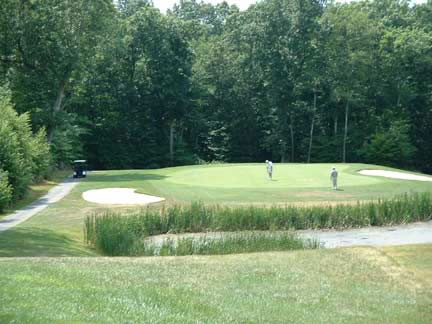

Other Scoring Systems

Skins
In a skins game, golfers compete on each hole, as a separate contest. Played for prize money on the professional level or as a means of a wager for amateurs, a skin, or the prize money assigned to each hole, carries over to subsequent holes if the hole is tied (or halved). If you come to the end of the round and there are still skins left over, play continues until the final skin has been decided.
Stableford scoring
In stableford points play (originated by Dr Frank Stableford, 1870-1959, was first used on 16 May 1932 at Wallasey Golf Club, Cheshire, England) the player gains points for the score achieved on each hole of the round or tournament (1 point for a bogey, 2 points for a par, 3 points for a birdie, 4 points for an eagle). The points achieved for each hole of the round or tournament is added to produce the total points score, and the player with the highest score wins.
Team play
- A foursome (defined in Rule 29) is played between two teams of two players each, in which each team has only one ball and players alternate playing it. For example, if players A and B form a team, A tees off on the first hole, B will play the second shot, A the third, and so on until the hole is finished. On the second hole, B will tee off (regardless who played the last putt on the first hole), then A plays the second shot, and so on. Foursomes can be played as match play or stroke play.
- A four-ball (Rules 30 and 31) is also played between two teams of two players each, but every player plays his own ball and for each team, the lower score on each hole is counted. Four-balls can be played as match play or stroke play.
There are also popular unofficial variations on team play:
- In a scramble (also known as Ambrose), each player in a team tees off on each hole, and the players decide which shot was best. Every player then plays his second shot from within a clublength of where the best ball has come to rest, and the procedure is repeated until the hole is finished. In a champagne scramble, each player in a team tees off on each hole. The best drive is used and all players play their own ball from this spot. In best ball, each player plays the hole as normal, but the lowest score of all the players on the team counts as the team's score.
- In a greensome, also called modified alternate shot, both players tee off, and then pick the best shot as in a scramble. The player who did not shoot the best first shot plays the second shot. The play then alternates as in a foursome.
- A variant of greensome is sometimes played where the opposing team chooses which of their opponent's tee shots the opponents should use. The player who did not shoot the chosen first shot plays the second shot. Play then continues as a greensome.
- There is also a form of starting called "shotgun", which is mainly used for tournament play. A "shotgun start" consists of groups starting on different holes, allowing for all players to start and end their round at the same time.